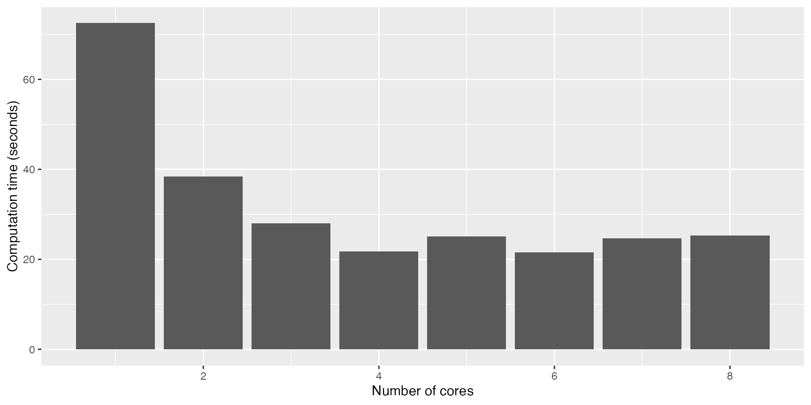

The time-series calculations done by functions
get_demand and get_n_connections can be done
by multiple time windows in parallel. At the same time, in computer
science, a common practice to reduce computation times is parallel
processing when the computer has multiple CPUs (i.e. multi-core
processing). In parallel processing, a task is divided into multiple
sub-tasks and assigned to multiple cores to make de calculations in
parallel. For parallel processing in R we make use of the R base package
parallel.
We can discover the number of physical CPUs in our computer with
function parallel::detectCores:
n_cores <- parallel::detectCores(logical = FALSE)
print(n_cores)## [1] 8We set the parameter logical = FALSE because it is
important to know the physical CPUs, not the logical
(or virtual/thread) ones seen by the OS. More information about this
parameter can be found in parallel::detectCores
documentation.
Below, an example of calculating the demand of 10.000 EV charging sessions with different number of cores:
cores_time <- tibble(
cores = 1:n_cores,
time = 0
)
for (mcc in cores_time$cores) {
results <- system.time(
evsim::california_ev_sessions %>%
sample_n(10000) %>%
mutate(Profile = "All") %>%
get_demand(by = "Profile", resolution = 60, mc.cores = mcc)
)
cores_time$time[mcc] <- as.numeric(results[3])
}And below there’s the plot of the results, were we can see that, for this computer, the optimal number of cores to use is 4:
library(ggplot2)
cores_time %>%
ggplot(aes(x = cores, y = time)) +
geom_col() +
labs(x = "Number of cores", y = "Computation time (seconds)")